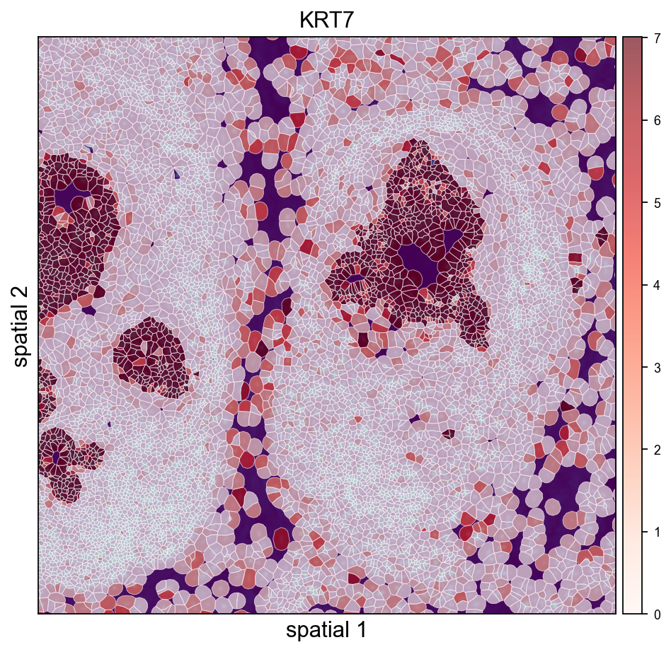
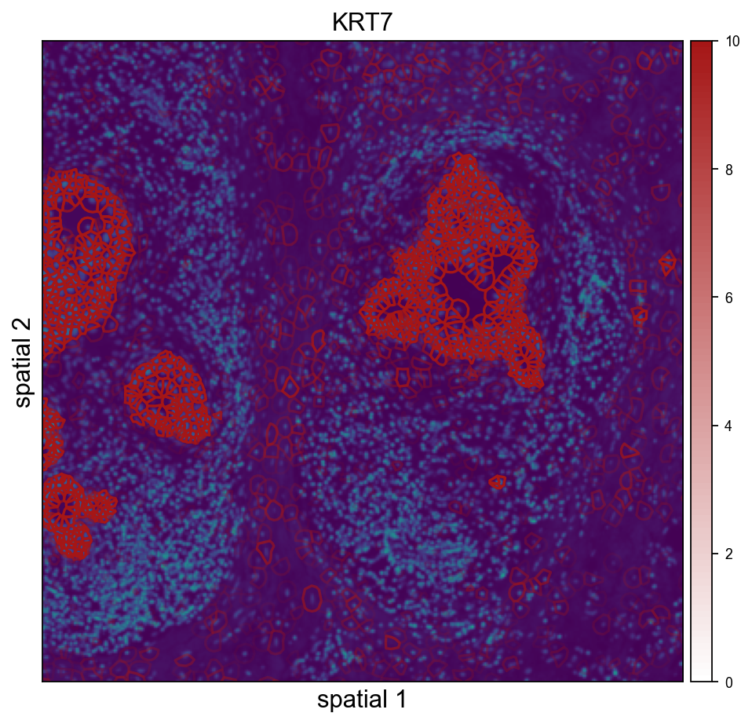

Analyze Xenium data#
The 10x Genomics Xenium In Situ platform is an image-based in situ technology that reports counts of a pre-designed gene panel at single-cell resolution. A single Xenium experiment produces a stitched tissue region in microns, per-cell centroids and polygon boundaries, individual transcript locations, and multi-channel morphology images. It is widely used for tumor microenvironment studies, brain atlasing, and validation of dissociated single-cell data.
This tutorial mirrors the Nanostring CosMx tutorial (t_nanostring_preprocess.ipynb) and is informed by squidpy’s Xenium vignette. We use ov.io.read_xenium() and a standard Leiden-based downstream analysis (skipping CAST). Key outputs you will see:
ov.io.read_xenium()parsing the 10xouts/layout into anAnnDatawith spatial coordinates in microns and cell polygon boundaries as WKT strings onobs['geometry']basic per-cell QC against control probes / codewords
the standard OmicVerse preprocessing pipeline (
normalize_total→log1p→scale→pca)k-NN graph + Leiden clustering
spatial visualization of the clusters over the tissue layout via both
ov.pl.embedding(centroid scatter) andov.pl.spatialseg(polygon overlay)
1. Environment setup#
Import omicverse, set the plotting style, and enable auto-reload. ov.style(font_path='Arial') keeps exported figures consistent across platforms.
from pathlib import Path
import numpy as np
import omicverse as ov
ov.style(font_path='Arial')
%load_ext autoreload
%autoreload 2
🔬 Starting plot initialization...
Using already downloaded Arial font from: /tmp/omicverse_arial.ttf
Registered as: Arial
🧬 Detecting GPU devices…
✅ NVIDIA CUDA GPUs detected: 1
• [CUDA 0] NVIDIA H100 80GB HBM3
Memory: 79.1 GB | Compute: 9.0
____ _ _ __
/ __ \____ ___ (_)___| | / /__ _____________
/ / / / __ `__ \/ / ___/ | / / _ \/ ___/ ___/ _ \
/ /_/ / / / / / / / /__ | |/ / __/ / (__ ) __/
\____/_/ /_/ /_/_/\___/ |___/\___/_/ /____/\___/
🔖 Version: 2.1.2rc1 📚 Tutorials: https://omicverse.readthedocs.io/
✅ plot_set complete.
ov.settings.cpu_gpu_mixed_init()
CPU-GPU mixed mode activated
Available GPU accelerators: CUDA
2. Download the Xenium dataset#
We use the public Xenium FFPE Human Breast Cancer Replicate 1 sample from 10x (≈167k cells, 313 genes, Breast Cancer Tumor Microenvironment panel + 33 custom targets). The full outs bundle is several GB because of the multi-channel morphology OME-TIFFs, but the minimum files for a Leiden analysis with segmentation visualization are only ~40 MB:
cell_feature_matrix.h5— sparse gene × cell counts (≈12 MB)cells.csv.gz— per-cell metadata includingx_centroid,y_centroidin microns (≈8 MB)cell_boundaries.parquet— per-cell polygon vertices forov.pl.spatialseg(≈8 MB)experiment.xenium— run metadata (JSON)
If you also want the H&E / DAPI background overlay, download morphology_focus.ome.tif (≈624 MB) and call ov.io.read_xenium(..., load_image=True).
# !mkdir -p data/xenium_breast_rep1
# BASE='https://cf.10xgenomics.com/samples/xenium/1.0.1/Xenium_FFPE_Human_Breast_Cancer_Rep1'
# !wget -O data/xenium_breast_rep1/cell_feature_matrix.h5 $BASE/Xenium_FFPE_Human_Breast_Cancer_Rep1_cell_feature_matrix.h5
# !wget -O data/xenium_breast_rep1/cells.csv.gz $BASE/Xenium_FFPE_Human_Breast_Cancer_Rep1_cells.csv.gz
# !wget -O data/xenium_breast_rep1/cell_boundaries.parquet $BASE/Xenium_FFPE_Human_Breast_Cancer_Rep1_cell_boundaries.parquet
# !wget -O data/xenium_breast_rep1/experiment.xenium $BASE/Xenium_FFPE_Human_Breast_Cancer_Rep1_experiment.xenium
# Optional — ~624 MB, only needed for a morphology background in ov.pl.spatial:
# !wget -O data/xenium_breast_rep1/morphology_focus.ome.tif $BASE/Xenium_FFPE_Human_Breast_Cancer_Rep1_morphology_focus.ome.tif
sample_dir = Path('data') / 'xenium_breast_rep1'
ov.utils.print_tree(sample_dir)
xenium_breast_rep1/
├── cell_boundaries.parquet
├── cell_feature_matrix.h5
├── cells.csv.gz
├── experiment.xenium
└── morphology_focus.ome.tif
3. Read the Xenium dataset#
ov.io.read_xenium() handles the 10x outs/ layout:
reads
cell_feature_matrix.h5via the 10x HDF5 parserdrops non-Gene-Expression features (control probes / codewords) so downstream PCA and HVG don’t waste capacity
merges
cells.csv.gz(orcells.parquet) intoobswrites cell centroids in microns to
obsm['spatial']converts
cell_boundaries.parquetvertex vectors into per-cell WKTPOLYGONstrings onobs['geometry']— the format expected byov.pl.spatialsegsets
uns['spatial'][library_id]['scalefactors'](tissue_hires_scalef = 1 / pixel_size) so micron coordinates map correctly into image-pixel space when a morphology image is loadedparses
experiment.xeniumintouns['spatial'][library_id]['metadata']
Pass load_image=False to skip the (large) morphology OME-TIFF, and load_boundaries=False to skip polygon extraction.
adata = ov.io.read_xenium(sample_dir, load_image=False)
adata
[Xenium] Reading Xenium data from: /scratch/users/steorra/xenium_test/breast_rep1
[Xenium] Loaded cell polygons (geometry WKT) for 167780/167780 cells
[Xenium] Done (n_obs=167780, n_vars=313, library_id=Replicate 1)
AnnData object with n_obs × n_vars = 167780 × 313
obs: 'transcript_counts', 'control_probe_counts', 'control_codeword_counts', 'total_counts', 'cell_area', 'nucleus_area', 'geometry'
var: 'gene_ids', 'feature_types', 'genome'
uns: 'spatial', 'omicverse_io'
obsm: 'spatial'
library_id = next(iter(adata.uns['spatial']))
sf = adata.uns['spatial'][library_id]['scalefactors']
print('library_id :', library_id)
print('spatial range (µm) :',
adata.obsm['spatial'].min(axis=0).tolist(), '->',
adata.obsm['spatial'].max(axis=0).tolist())
print('pixel size (µm/px) :', 1 / sf['tissue_hires_scalef'])
print('mean cell diameter :', round(sf['spot_diameter_fullres'] / sf['tissue_hires_scalef'], 2), 'µm')
print('cells with geometry:', (adata.obs['geometry'] != '').sum())
library_id : Replicate 1
spatial range (µm) : [2.1325161457061768, 3.642256736755371] -> [7523.0869140625, 5474.37939453125]
pixel size (µm/px) : 0.2125
mean cell diameter : 15.7 µm
cells with geometry: 164000
4. Inspect spatial QC#
Two quick checks over the tissue layout: total_counts per cell and cell_area (in square microns). For a tumor microenvironment section you typically see counts concentrated on epithelial / tumor tiles and a roughly bimodal area distribution (small immune vs. large epithelial).
import matplotlib.pyplot as plt
fig, axs = plt.subplots(1, 2, figsize=(12, 5))
ov.pl.embedding(
adata, basis='spatial', color='total_counts',
vmax='p99', cmap='Reds', ax=axs[0], show=False, title='total_counts',
)
axs[0].invert_yaxis()
ov.pl.embedding(
adata, basis='spatial', color='cell_area',
vmax='p99', cmap='viridis', ax=axs[1], show=False, title='cell_area (µm²)',
)
axs[1].invert_yaxis()
plt.tight_layout()

5. Cell-level QC#
Filter out cells with very low transcript counts — these are usually segmentation artifacts or empty nuclei. A threshold of 10 counts is mild; tune based on the total_counts histogram.
import scipy.sparse as sp
counts = np.asarray(adata.X.sum(axis=1)).ravel() if sp.issparse(adata.X) else adata.X.sum(axis=1)
print(f'cells pre-QC : {adata.n_obs}')
adata = adata[counts >= 10].copy()
print(f'cells post-QC: {adata.n_obs} (>= 10 transcripts/cell)')
cells pre-QC : 167780
cells post-QC: 164000 (>= 10 transcripts/cell)
6. Normalize, log-transform and scale#
We use the standard normalize_total + log1p + scale pipeline. Because the panel is small (313 genes), we skip HVG selection and use all genes for PCA.
ov.pp.normalize_total(adata, target_sum=1e4)
ov.pp.log1p(adata)
ov.pp.scale(adata)
🔍 Count Normalization:
Target sum: 10000.0
Exclude highly expressed: False
✅ Count Normalization Completed Successfully!
✓ Processed: 164,000 cells × 313 genes
✓ Runtime: 0.04s
╭─ SUMMARY: scale ───────────────────────────────────────────────────╮
│ Duration: 0.7115s │
│ Shape: 164,000 x 313 (Unchanged) │
│ │
│ CHANGES DETECTED │
│ ──────────────── │
│ ● UNS │ ✚ REFERENCE_MANU │
│ │ ✚ status │
│ │ ✚ status_args │
│ │
│ ● LAYERS │ ✚ scaled (array, 164000x313) │
│ │
╰────────────────────────────────────────────────────────────────────╯
7. PCA + neighbors + Leiden#
Compute the first 50 principal components of the scaled matrix, build a k-NN graph, and run Leiden. For a 164k-cell Xenium section, resolution=0.5 typically gives 10–20 clusters mapping to broad tissue structure. Push higher for finer subtypes, lower for compartments.
ov.pp.pca(adata, layer='scaled', n_pcs=50)
ov.pp.neighbors(
adata, n_neighbors=15,
use_rep='scaled|original|X_pca', n_pcs=50,
)
ov.pp.leiden(adata, resolution=0.5)
print(f"leiden: {adata.obs['leiden'].nunique()} clusters")
🚀 Using GPU to calculate PCA...
NVIDIA CUDA GPUs detected:
📊 [CUDA 0] NVIDIA H100 80GB HBM3
------------------------------ 5/81559 MiB (0.0%)
computing PCA🔍
with n_comps=50
Using CUDA device: NVIDIA H100 80GB HBM3
✅ Using built-in torch_pca for GPU-accelerated PCA
🚀 Using torch_pca PCA for CUDA GPU acceleration
🚀 torch_pca PCA backend: CUDA GPU acceleration (supports sparse matrices)
📊 PCA input data type: ndarray, shape: (164000, 313), dtype: float64
🔧 solver_used_in_uns (planned): covariance_eigh
🔧 PCA solver used: covariance_eigh
finished✅ (0.56s)
╭─ SUMMARY: pca ─────────────────────────────────────────────────────╮
│ Duration: 0.5841s │
│ Shape: 164,000 x 313 (Unchanged) │
│ │
│ CHANGES DETECTED │
│ ──────────────── │
│ ● UNS │ ✚ pca │
│ │ └─ params: {'zero_center': True, 'use_highly_variable': Fa...│
│ │ ✚ scaled|original|cum_sum_eigenvalues │
│ │ ✚ scaled|original|pca_var_ratios │
│ │
│ ● OBSM │ ✚ X_pca (array, 164000x50) │
│ │ ✚ scaled|original|X_pca (array, 164000x50) │
│ │
╰────────────────────────────────────────────────────────────────────╯
🚀 Using torch CPU/GPU mixed mode to calculate neighbors...
NVIDIA CUDA GPUs detected:
📊 [CUDA 0] NVIDIA H100 80GB HBM3
------------------------------ 1487/81559 MiB (1.8%)
🚀 Mixed mode default transformer: pyg
🔍 K-Nearest Neighbors Graph Construction:
Mode: cpu-gpu-mixed
Neighbors: 15
Method: torch
Metric: euclidean
Transformer: pyg
Representation: scaled|original|X_pca
PCs used: 50
🔍 Computing neighbor distances...
💡 Using PyTorch Geometric KNN on cuda
🔍 Computing connectivity matrix...
💡 Using UMAP-style connectivity
✓ Graph is fully connected
✅ KNN Graph Construction Completed Successfully!
✓ Processed: 164,000 cells with 15 neighbors each
✓ Results added to AnnData object:
• 'neighbors': Neighbors metadata (adata.uns)
• 'distances': Distance matrix (adata.obsp)
• 'connectivities': Connectivity matrix (adata.obsp)
╭─ SUMMARY: neighbors ───────────────────────────────────────────────╮
│ Duration: 12.3926s │
│ Shape: 164,000 x 313 (Unchanged) │
│ │
│ CHANGES DETECTED │
│ ──────────────── │
│ ● UNS │ ✚ neighbors │
│ │ └─ params: {'n_neighbors': 15, 'method': 'torch', 'random_...│
│ │
│ ● OBSP │ ✚ connectivities (sparse matrix, 164000x164000) │
│ │ ✚ distances (sparse matrix, 164000x164000) │
│ │
╰────────────────────────────────────────────────────────────────────╯
⚙️ Using torch CPU/GPU mixed mode to calculate Leiden...
NVIDIA CUDA GPUs detected:
📊 [CUDA 0] NVIDIA H100 80GB HBM3
|----------------------------- 2943/81559 MiB (3.6%)
Using batch size `n_batches` calculated from sqrt(n_obs): 404
╭─ SUMMARY: leiden ──────────────────────────────────────────────────╮
│ Duration: 158.7248s │
│ Shape: 164,000 x 313 (Unchanged) │
│ │
│ CHANGES DETECTED │
│ ──────────────── │
│ ● OBS │ ✚ leiden (category) │
│ │
│ ● UNS │ ✚ leiden │
│ │ └─ params: {'resolution': 0.5, 'random_state': 0, 'local_i...│
│ │
╰────────────────────────────────────────────────────────────────────╯
leiden: 20 clusters
8. Visualize Leiden clusters on the tissue#
Plot the Leiden label and one marker gene over the spatial layout. Xenium centroids are in image-pixel convention (y grows downward); ax.invert_yaxis() lines the plot up with the tissue image you would overlay in step 10.
marker = next((g for g in ['KRT7', 'EPCAM', 'ERBB2', 'ESR1', 'KRT14']
if g in adata.var_names), adata.var_names[0])
fig, axs = plt.subplots(1, 2, figsize=(13, 6))
ov.pl.embedding(
adata, basis='spatial', color='leiden',
palette=ov.pl.palette_112,
legend_fontsize=8, ax=axs[0], show=False, title='Leiden clusters',
)
axs[0].invert_yaxis()
ov.pl.embedding(
adata, basis='spatial', color=marker,
vmax='p99.2', cmap='Reds', ax=axs[1], show=False, title=marker,
)
axs[1].invert_yaxis()
plt.tight_layout()

9. Visualize with cell polygons (ov.pl.spatialseg)#
Unlike centroid scatter, ov.pl.spatialseg draws each cell as its actual segmented polygon. This is the right view for inspecting cluster boundaries against tissue morphology and for diagnosing oversegmentation.
On a 160k-cell section rendering every polygon produces a dense figure. To see the segmentation itself we also provide a cropped view (crop_coord=(x0, x1, y0, y1) in microns). Pick a region where tumor and stromal compartments should meet — for this breast sample, coordinates around (2000–3200 µm × 2500–3700 µm) land on a mixed compartment.
Rendering every cell polygon for the full 160k-cell section can take minutes and produce a dense image where individual cells aren’t visible. We’ll keep the full-section view to ov.pl.embedding (centroid scatter) and use ov.pl.spatialseg only on a cropped region, where the polygons are actually readable.
ov.pl.spatialseg(
adata, color='leiden',
library_id=library_id,
edges_color='white', edges_width=0.3,
alpha=1.0, legend_fontsize=8,
palette=ov.pl.palette_112,
crop_coord=(2000, 3200, 2500, 3700),
figsize=(7, 6),
)

<Axes: title={'center': 'leiden'}, xlabel='spatial 1', ylabel='spatial 2'>
The same view coloured by a tumor-associated marker shows which polygons actually express it — useful for validating that a Leiden cluster and a gene signature agree.
import numpy as np
expr = adata[:, marker].X.toarray().ravel() if hasattr(adata[:, marker].X, 'toarray') else np.asarray(adata[:, marker].X).ravel()
vmax_marker = float(np.percentile(expr[expr > 0], 99)) if (expr > 0).any() else 1.0
ov.pl.spatialseg(
adata, color=marker,
library_id=library_id,
edges_color='white', edges_width=0.3,
alpha=1.0, legend_fontsize=8,
cmap='Reds', vmax=vmax_marker,
crop_coord=(2000, 3200, 2500, 3700),
figsize=(7, 6),
)

<Axes: title={'center': 'KRT7'}, xlabel='spatial 1', ylabel='spatial 2'>
10. (Optional) overlay on the morphology image#
If you downloaded morphology_focus.ome.tif into sample_dir, re-read with load_image=True and use ov.pl.spatial / ov.pl.spatialseg to overlay labels on the morphology background. read_xenium() sets tissue_hires_scalef = 1 / pixel_size so spot coordinates land in image-pixel space.
adata_img = ov.io.read_xenium(sample_dir, load_image=True)
adata_img.obs['leiden'] = adata.obs['leiden'] # carry over labels
ov.pl.spatialseg(
adata_img, color='leiden', library_id=library_id,
alpha_img=0.5, alpha=0.8,
palette=ov.pl.palette_112,
crop_coord=(2000, 3200, 2500, 3700),
)
For large Xenium sections (cm-scale), always prefer crop_coord=(x0, x1, y0, y1) in microns to zoom into a region — rendering every polygon for the full tissue can take minutes.
11. Save the processed object#
Persist the analyzed AnnData so you can skip preprocessing next time. The WKT strings in obs['geometry'] round-trip through adata.write() unchanged.
adata.write('data/xenium_breast_rep1_processed.h5ad')
#adata=ov.read('data/xenium_breast_rep1_processed.h5ad')
12. Cache the loaded AnnData for fast re-reads#
Parsing cell_feature_matrix.h5 + cells.csv.gz + cell_boundaries.parquet (including the per-cell WKT polygon construction) takes a few seconds the first time. Pass cache_file= to read_xenium() to write an h5ad snapshot alongside the outs folder — subsequent calls with the same cache_file skip all the parsing and just read the h5ad back, typically ~30× faster.
The cache includes everything: counts, obs/var, spatial coords, polygon WKT strings, image payloads, and experiment metadata. Delete the cache file to force a re-read after updating any of the source files.
import time, os
cache_path = 'data/xenium_breast_rep1_cache.h5ad'
if os.path.exists(cache_path):
os.remove(cache_path) # start fresh to show the timing difference
t0 = time.time()
_ = ov.io.read_xenium(sample_dir, load_image=False, cache_file=cache_path)
t_cold = time.time() - t0
t0 = time.time()
_ = ov.io.read_xenium(sample_dir, cache_file=cache_path)
t_warm = time.time() - t0
print(f'cold (raw parse + cache write): {t_cold:.2f} s')
print(f'warm (cache read) : {t_warm:.2f} s')
print(f'speedup : {t_cold / t_warm:.1f}x')
[Xenium] Reading Xenium data from: /scratch/users/steorra/xenium_test/breast_rep1
[Xenium] Loaded cell polygons (geometry WKT) for 167780/167780 cells
[Xenium] Wrote cache AnnData to: /scratch/users/steorra/analysis/omicverse_dev/omicverse/omicverse_guide/docs/Tutorials-space/data/xenium_breast_rep1_cache.h5ad
[Xenium] Done (n_obs=167780, n_vars=313, library_id=Replicate 1)
[Xenium] Reading cached AnnData from: /scratch/users/steorra/analysis/omicverse_dev/omicverse/omicverse_guide/docs/Tutorials-space/data/xenium_breast_rep1_cache.h5ad
cold (raw parse + cache write): 9.70 s
warm (cache read) : 0.27 s
speedup : 35.9x
13. Overlay Leiden clusters on the morphology image#
When morphology_focus.ome.tif sits next to the cell_feature_matrix.h5, pass load_image=True and ov.pl.spatialseg will render cell polygons on top of the morphology background. The OME-TIFF is a multi-resolution pyramid (8 levels from 25K×35K down to 201×276), so we only read one level: image_max_dim=4096 picks the highest pyramid level whose largest dimension fits under 4096 px (~1611×2213 for this sample, ~7 MB as uint16, <1 s to load). That is the Xenium analogue of Visium’s hires.png — no need to touch the 25K×35K full-resolution data.
The loader rescales tissue_hires_scalef to the chosen pyramid level, so micron coordinates land on the downsampled image without any extra math on your side.
# One-time call: loads the image, composes the full AnnData, writes the cache
adata_img = ov.io.read_xenium(
sample_dir,
load_image=True,
image_max_dim=4096,
cache_file='data/xenium_breast_rep1_with_image_cache.h5ad',
)
# Carry Leiden labels from the already-processed adata so we can visualise
# clusters without re-running the pipeline on the image-backed copy.
adata_img = adata_img[adata.obs_names].copy()
adata_img.obs['leiden'] = adata.obs['leiden'].values
img = adata_img.uns['spatial'][library_id]['images']['hires']
sf = adata_img.uns['spatial'][library_id]['scalefactors']
print('image shape :', img.shape, 'dtype:', img.dtype)
print('hires_scalef :', round(sf['tissue_hires_scalef'], 4),
'(micron -> image-pixel)')
print('fullres diameter:', round(sf['spot_diameter_fullres'], 2), 'px')
[Xenium] Reading cached AnnData from: /scratch/users/steorra/analysis/omicverse_dev/omicverse/omicverse_guide/docs/Tutorials-space/data/xenium_breast_rep1_with_image_cache.h5ad
image shape : (1611, 2213) dtype: uint16
hires_scalef : 0.2941 (micron -> image-pixel)
fullres diameter: 4.62 px
image shape : (1611, 2213) dtype: uint16
hires_scalef : 0.2941 (micron -> image-pixel)
fullres diameter: 4.62 px
Cropped H&E / DAPI overlay — Leiden on the left, KRT7 on the right. crop_coord is in microns (same convention as the other spatialseg calls above); the loader’s rescaled tissue_hires_scalef handles the mapping into image-pixel space for the imshow call.
ov.pl.spatialseg(
adata_img, color='leiden',
library_id=library_id,
edges_color='white', edges_width=0.4,
# alpha=0.45 keeps the DAPI morphology visible through the cluster fills so the
# polygon-to-nucleus alignment stays obvious. Raise closer to 1.0 if you only
# care about cluster assignment and not the background.
alpha=0.45, alpha_img=1.0,
legend_fontsize=8,
palette=ov.pl.palette_112,
crop_coord=(2000, 3200, 2500, 3700),
figsize=(7, 6),
)

<Axes: title={'center': 'leiden'}, xlabel='spatial 1', ylabel='spatial 2'>
ov.pl.spatialseg(
adata_img, color=marker,
library_id=library_id,
edges_color='white', edges_width=0.4,
alpha=0.65, alpha_img=1.0,
legend_fontsize=8,
cmap='Reds', vmax=vmax_marker,
crop_coord=(2000, 3200, 2500, 3700),
figsize=(7, 6),
)
{kind=link}

<Axes: title={'center': 'KRT7'}, xlabel='spatial 1', ylabel='spatial 2'>
ov.pl.spatialseg(
adata_img, color='KRT7',
library_id=library_id,
edges_color='white', edges_width=0.4,
alpha=0.65, alpha_img=1.0,
legend_fontsize=8,
cmap=ov.pl.create_custom_colormap('#a51616'), vmax=10,
crop_coord=(2000, 3200, 2500, 3700),
figsize=(7, 6),
)

<Axes: title={'center': 'KRT7'}, xlabel='spatial 1', ylabel='spatial 2'>
ov.pl.spatialseg(
adata_img, color='KRT7',
library_id=library_id,
edges_color='white', edges_width=0.4,
alpha=0.65, alpha_img=1.0,
legend_fontsize=8,
cmap=ov.pl.create_custom_colormap('#a51616'), vmax=10,
seg_contourpx=1.5,
crop_coord=(2000, 3200, 2500, 3700),
figsize=(7, 6),
)
{kind=link}

<Axes: title={'center': 'KRT7'}, xlabel='spatial 1', ylabel='spatial 2'>
Quick alignment check — polygon outlines on DAPI#
To confirm the morphology image and the cell polygons are correctly registered, render a tight crop with outlines only (no fill) over the DAPI background. Every polygon should contain exactly one DAPI-bright nucleus.
# Render polygons directly — gives full control of facecolor='none' so the fills
# don't mask the DAPI (`ov.pl.spatialseg(alpha=0, ...)` ends up skipping the
# collection entirely when alpha is zero).
import matplotlib.pyplot as plt
from matplotlib.patches import Polygon as _MplPoly
from matplotlib.collections import PatchCollection
from shapely import wkt as _wkt
x0u, x1u, y0u, y1u = 2400, 2800, 2900, 3300 # tighter crop (microns)
sf = adata_img.uns['spatial'][library_id]['scalefactors']['tissue_hires_scalef']
xy = adata_img.obsm['spatial']
mask = (xy[:,0] > x0u) & (xy[:,0] < x1u) & (xy[:,1] > y0u) & (xy[:,1] < y1u)
fig, ax = plt.subplots(figsize=(7, 6))
img = adata_img.uns['spatial'][library_id]['images']['hires']
ax.imshow(img, origin='upper', cmap='gray',
vmax=float(np.percentile(img, 99.5)))
patches = []
for i in np.where(mask)[0]:
w = adata_img.obs['geometry'].iloc[i]
if not w: continue
geom = _wkt.loads(w)
if not hasattr(geom, 'exterior'): continue
xs, ys = geom.exterior.xy
pts = np.column_stack((np.array(xs)*sf, np.array(ys)*sf))
patches.append(_MplPoly(pts, closed=True))
ax.add_collection(PatchCollection(
patches, facecolor='none', edgecolor='yellow', linewidth=0.5, alpha=0.9,
))
ax.set_xlim(x0u * sf, x1u * sf)
ax.set_ylim(y1u * sf, y0u * sf) # inverted y (image convention)
ax.set_title(f'alignment check — {len(patches)} cells (yellow) on DAPI')
ax.set_aspect('equal')
plt.show()
{kind=link}